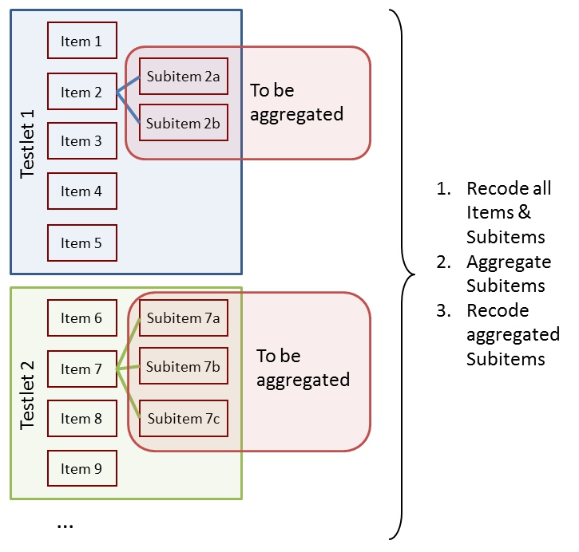
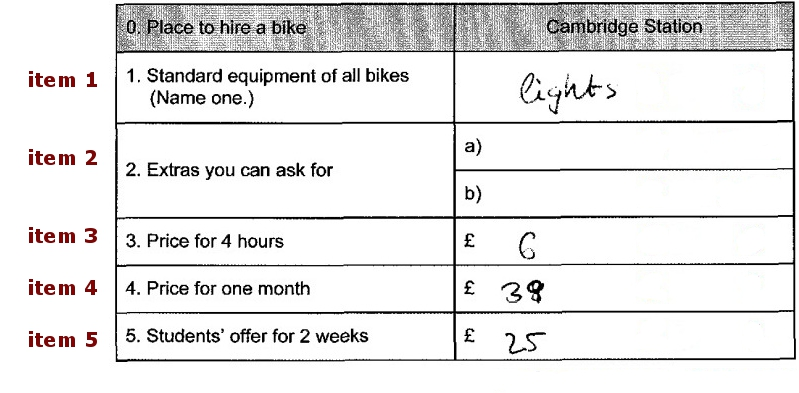
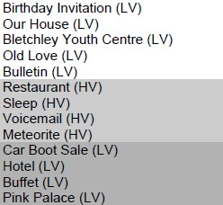
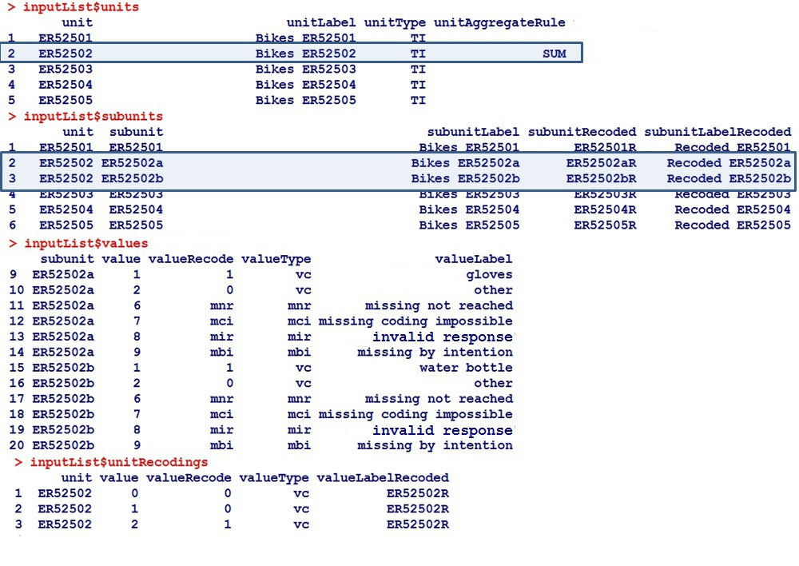
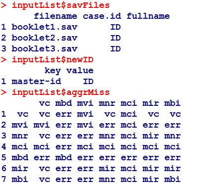
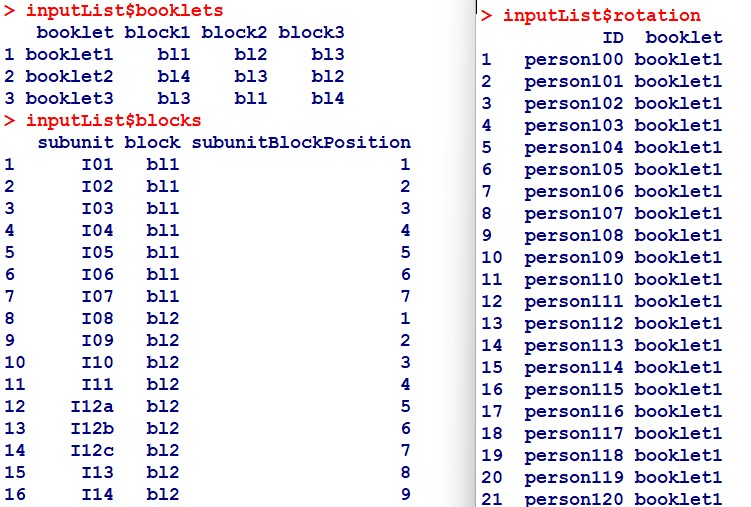
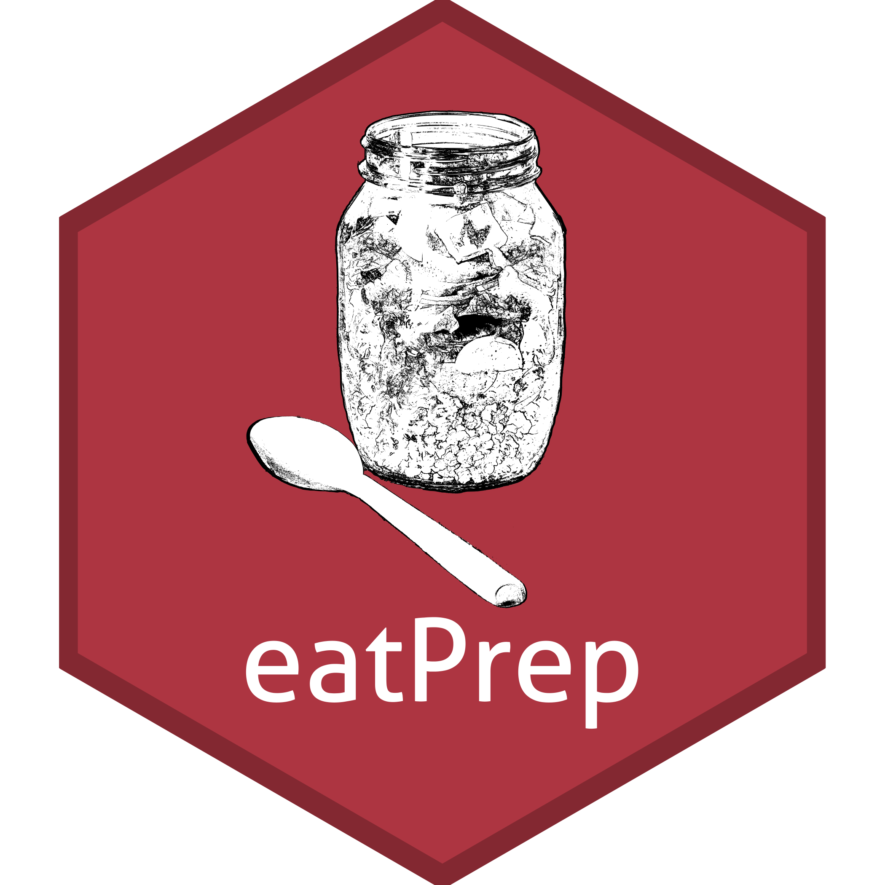

eatPrep
IQB-internes R-Paket zur Aufbereitung von “Papier”-Kompetenzdaten
2024-11-19
Agenda
Das Paket eatPrep
- Fokus
- Features
- Installation
Datenstrukturen
…von “Papier-Kompetenzdaten” am IQB
Repräsentation dieser Strukturen in eatPrep
Praktisch angewendet
- Haupt-Funktionen und -Schritte der Papier-Kompetenzdatenaufbereitung
- Meta-Daten aus der Datenbank (IQB-ItemDB) holen
- Rater-Funktionen und der KA3-Datensatz
- weitere Funktionen
Übung
1. Fokus, Features und Installation
Was ist “Papier-Kompetenzdatenaufbereitung”?
Papier-Tests
Schülerinnen und Schüler…
- erhalten gedruckte Testbögen,
- füllen diese aus und
- werden dabei von speziell geschulten Testleiter:innen beaufsichtigt.
Die Ergebnisse werden später zentral gesammelt.
1a. eatPrep: Fokus
Was ist “Papier-Kompetenzdatenaufbereitung”?
Aufbereitung der Kompetenzdaten
Die ausgefüllten Bögen werden
- eingescannt (idR durch Datenpartner)
- bei Multiple-Choice-Fragen oder Ankreuzaufgaben wird häufig ein optisches Scannersystem verwendet, das die markierten automatisch Felder erkennt und direkt in eine digitale Datenbank überträgt (idR durch Datenpartner)
- (teil-) offene Antworten werden durch geschulte Kodierer:innen bewertet (teils am Haus, teils durch Datenpartner)
Ansatzpunkt für eatPrep: Standardisierung und Automatisierung des Umgangs mit solchen Daten, die vom Subkontraktor zumeist im SPSS- (.sav) Format übergeben werden.
1a. eatPrep: Fokus
Primäres Ziel von eatPrep
- Aufbereitung von Kompetenztestdaten für IRT-Analysen unter Verwendung von Meta-Informationen (z.B. aus der IQB-ItemDB)
- Optimiert für die Aufbereitung von IQB-Kompetenzdaten, aber nicht nur für diese verwendbar
1a. eatPrep: Fokus
Features
- Automatisierung der Aufbereitungs-Arbeitsschritte
- Vielfältige Prüfungen, Plausibilitätschecks und Diagnostik
- Behandlung vieler verschiedener Missingtypen, wenn gewünscht Beibehaltung bis zum Schluss (inkl. Missing-not-reached-Berechnung)
- Weitere Tools (Kategorientrennschärfen, Raterfunktionen, teil-manuelles Datencleaning, Exportfunktionen…)
1b. eatPrep: Features
Installation
- eatPrep liegt auf der Entwicklerplattform GitHub
- R-Pakete kann man von GitHub z.B. über das R-Paket “remotes” installieren. Sofern es nicht vorhanden ist, kann es mit…
…installiert werden. eatPrep kann anschließend mit folgenden Befehlszeilen installiert und geladen werden:
1c. eatPrep: Installation
2. Daten-Strukturen von Kompetenzdaten am IQB
Subitems, Items, Aufgaben

2a. Strukturen von Papier-Kompetenzdaten am IQB
Subitems, Items, Aufgaben
2a. Strukturen von Papier-Kompetenzdaten am IQB
Subitems, Items, Aufgaben und Values und Scores

2a. Subitems in Items in Aufgaben
Fehlende Werte
| Code | Abbr | Label | Explanation |
|---|---|---|---|
| -98 | mir | missing invalid response | (1) Item was edited, and (2a) empty answer or (2b) invalid (joke) answer. |
| -99 | mbo/mbi | missing by omission/intention | Item wasn’t edited but seen, or wasn’t seen, but there are seen or edited subsequent Items. |
| -96 | mnr | missing not reached | (1) Item wasn’t seen, and (2) all subsequent Items weren’t seen, either. |
| -97 | mci | missing coding impossible | (1) Item should/could have been edited, and (2) answer can’t be analysed due to technical problems. |
| -94 | mbd | missing by design | no answer, because Item wasn’t shown to the testperson by design. |
2a. Subitems in Items in Aufgaben
Aufgaben in Blöcken und Blöcke in Testheften
 
2a. Strukturen von Papier-Kompetenzdaten am IQB
Subitems, Items, Aufgaben, Blöcke und Testhefte
Testhefte (booklets): bestehen aus Blöcken
Blöcke (blocks/cluster): bestehen aus Aufgaben
Aufgaben (tasks): beinhalten Items (i.d.R. zu einem gemeinsamen Stimulus/Testlet)
Items (units): (meist) die am Ende interessierende Analyseeinheit
Subitems (subunits): werden zu Items aggregiert
Werte (values): Ausprägungen, die eine Person auf einem (Sub-)Item annehmen kann
Scores (valueRecodes): Eine Abbildung der ursprünglichen Werte (Values) auf eine kleinere Anzahl von Kategorien (i.d.R. mindestens Richtig/Falsch/Fehlend, also 1/0/NA), die besser für eine IRT-Skalierung geeignet sind
2a. Strukturen von Papier-Kompetenzdaten am IQB
Repräsentation der Datenstrukturen in eatPrep
wir brauchen Meta-Daten über die Items
analog einfacher relationaler Meta-Daten-Datenbank: eine Liste aus mehreren data.frames mit prädefinierter Struktur und festen Namen
2b. Metadaten-Struktur in eatPrep
Repräsentation der Datenstrukturen in eatPrep: inputListen-Plätze 1-4

2b. Metadaten-Struktur in eatPrep
Repräsentation der Datenstrukturen in eatPrep: inputListen-Plätze 5-7

2b. Metadaten-Struktur in eatPrep
Repräsentation der Datenstrukturen in eatPrep: inputListen-Plätze 8-10

2b. Metadaten-Struktur in eatPrep
Funktionen in eatPrep
(Meta-)Daten einlesen
readDaemonXlsx() - Einlesen der inputListe, die mithilfe des EDV-Tools “ZKDaemon” erzeugt wurde.
(Dieses liegt unter i:\EDV\IQB-Apps\ZKDaemon\ZKDaemon.application. Eine ausführlichere, via Screenshots geführte Anleitung zur Bedienung des ZKDaemon findet sich hier:
i:\Methoden\02_IQB-interne_eat_Workshops\eatPrep_2021\eatPrep_2021-06-18.pdf)
readSpss() - Einlesen der SPSS-Dateien
readMerkmalXlsx() - Einlesen von zusätzlichen Item- und Aufgabenmerkmalen wie Bearbeitungszeiten, Formaten, inhaltlichen Kategorien, …
(Erzeugen der Merkmal-Xlsx via Klick auf “Merkmalsauszug” in i:\EDV\IQB-Apps\IQB-ItemDB\IQB-ItemDB.application)
3a. Praxis: Haupt-Funktionen in eatPrep
(Meta-)Daten einlesen: inputListe
Item Meta-Daten:
filename <- system.file("extdata", "inputList.xlsx", package = "eatPrep")
inpustList <- readDaemonXlsx(filename)
str(inpustList)> List of 9
> $ units :'data.frame': 29 obs. of 6 variables:
> ..$ unit : chr [1:29] "I01" "I02" "I03" "I04" ...
> ..$ unitLabel : chr [1:29] "Animals: Weight of a duck" "Animals: Weight of a horse" "Animals: Weight of a mouse" "Animals: Weight of a cat" ...
> ..$ unitDescription : chr [1:29] NA NA NA NA ...
> ..$ unitType : chr [1:29] "TI" "TI" "TI" "TI" ...
> ..$ unitAggregateRule: chr [1:29] NA NA NA NA ...
> ..$ unitScoreRule : chr [1:29] NA NA NA NA ...
> $ subunits :'data.frame': 30 obs. of 9 variables:
> ..$ unit : chr [1:30] "I01" "I02" "I03" "I04" ...
> ..$ subunit : chr [1:30] "I01" "I02" "I03" "I04" ...
> ..$ subunitType : chr [1:30] "1" "1" "1" "1" ...
> ..$ subunitLabel : chr [1:30] "Animals: Weight of a duck" "Animals: Weight of a horse" "Animals: Weight of a mouse" "Animals: Weight of a cat" ...
> ..$ subunitDescription : chr [1:30] NA NA NA NA ...
> ..$ subunitPosition : chr [1:30] "a)" "b)" "c)" "d)" ...
> ..$ subunitTransniveau : chr [1:30] NA NA NA NA ...
> ..$ subunitRecoded : chr [1:30] "I01R" "I02R" "I03R" "I04R" ...
> ..$ subunitLabelRecoded: chr [1:30] "Recoded Animals: Weight of a duck" "Recoded Animals: Weight of a horse" "Recoded Animals: Weight of a mouse" "Recoded Animals: Weight of a cat" ...
> $ values :'data.frame': 220 obs. of 8 variables:
> ..$ subunit : chr [1:220] "I01" "I01" "I01" "I01" ...
> ..$ value : chr [1:220] "1" "2" "3" "6" ...
> ..$ valueRecode : chr [1:220] "0" "0" "1" "mnr" ...
> ..$ valueType : chr [1:220] "vc" "vc" "vc" "mnr" ...
> ..$ valueLabel : chr [1:220] "Response option 1 marked" "Response option 2 marked" "Response option 3 marked" "missing not reached" ...
> ..$ valueDescription : chr [1:220] "Response option 1 marked" "Response option 2 marked" "Response option 3 marked" "missing not reached" ...
> ..$ valueLabelRecoded : chr [1:220] "0" "0" "1" "mnr" ...
> ..$ valueDescriptionRecoded: chr [1:220] NA NA NA NA ...
> $ unitRecodings:'data.frame': 7 obs. of 7 variables:
> ..$ unit : chr [1:7] "I12" "I12" "I12" "I12" ...
> ..$ value : chr [1:7] "0" "1" "2" "3" ...
> ..$ valueRecode : chr [1:7] "0" "0" "0" "1" ...
> ..$ valueType : chr [1:7] "vc" "vc" "vc" "vc" ...
> ..$ valueLabel : chr [1:7] NA NA NA NA ...
> ..$ valueDescription : chr [1:7] NA NA NA NA ...
> ..$ valueLabelRecoded: chr [1:7] NA NA NA NA ...
> $ savFiles :'data.frame': 3 obs. of 3 variables:
> ..$ filename: chr [1:3] "booklet1.sav" "booklet2.sav" "booklet3.sav"
> ..$ case.id : chr [1:3] "ID" "ID" "ID"
> ..$ fullname: chr [1:3] NA NA NA
> $ newID :'data.frame': 1 obs. of 2 variables:
> ..$ key : chr "master-id"
> ..$ value: chr "ID"
> $ aggrMiss :'data.frame': 7 obs. of 8 variables:
> ..$ nam: chr [1:7] "vc" "mvi" "mnr" "mci" ...
> ..$ vc : chr [1:7] "vc" "mvi" "vc" "mci" ...
> ..$ mvi: chr [1:7] "mvi" "mvi" "err" "mci" ...
> ..$ mnr: chr [1:7] "vc" "err" "mnr" "mci" ...
> ..$ mci: chr [1:7] "mci" "mci" "mci" "mci" ...
> ..$ mbd: chr [1:7] "err" "err" "err" "err" ...
> ..$ mir: chr [1:7] "vc" "err" "mir" "mci" ...
> ..$ mbi: chr [1:7] "vc" "err" "mnr" "mci" ...
> $ booklets :'data.frame': 3 obs. of 4 variables:
> ..$ booklet: chr [1:3] "booklet1" "booklet2" "booklet3"
> ..$ block1 : chr [1:3] "bl1" "bl4" "bl3"
> ..$ block2 : chr [1:3] "bl2" "bl3" "bl1"
> ..$ block3 : chr [1:3] "bl3" "bl2" "bl4"
> $ blocks :'data.frame': 30 obs. of 3 variables:
> ..$ subunit : chr [1:30] "I01" "I02" "I03" "I04" ...
> ..$ block : chr [1:30] "bl1" "bl1" "bl1" "bl1" ...
> ..$ subunitBlockPosition: chr [1:30] "1" "2" "3" "4" ...
3a. Praxis: Haupt-Funktionen in eatPrep
(Meta-)Daten einlesen: SPSS-Daten
Exemplarisch ein Datensatz:
filename <- system.file("extdata", "booklet1.sav", package = "eatPrep")
booklet1 <- readSpss(filename)
head(booklet1)> idstud Hisei item_8 item_9 item_10 item_11 item_12c item_13 item_14
> 1 person_002 57 1 3 2 3 4 2 6
> 2 person_003 32 1 2 2 1 4 2 6
> 3 person_004 59 1 4 4 3 4 2 6
> 4 person_005 56 2 4 4 9 4 2 6
> 5 person_006 55 1 2 2 2 4 2 6
> 6 person_007 47 1 2 3 1 4 2 6
> item_15 item_16 item_17 item_18 item_19 item_20 item_21 item_1 item_2 item_3
> 1 3 4 2
> 2 3 4 2
> 3 3 4 2
> 4 3 1 2
> 5 3 4 2
> 6 1 4 2
> item_4 item_5 item_6 item_7 item_22 item_23 item_24 item_25 item_26 item_27
> 1 3 1 1 1
> 2 3 0 0 1
> 3 3 0 0 1
> 4 2 1 1 1 9
> 5 2 0 0 1
> 6 3 0 0 1
> item_28 item_12a item_12b
> 1 0 1
> 2 0 0
> 3 0 0
> 4 0 1
> 5 0 1
> 6 0 0
3a. Praxis: Haupt-Funktionen in eatPrep
(Meta-)Daten einlesen: Merkmale
Weitere Merkmale:
filename <- system.file("extdata", "itemmerkmale.xlsx", package = "eatPrep")
merkmale <- readMerkmalXlsx(filename, tolcl = FALSE, alleM = TRUE)
head(merkmale)> $Aufgabenmerkmale
> Aufgabe Zeit.A AufgID AufgTitel
> 1 Animals: Weight of a duck 0:00 Animals: Weight of a duck NA
> 2 Animals: Weight of a horse 0:00 Animals: Weight of a horse NA
>
> $Itemmerkmale
> Aufgabe Teilaufgabe Item Zeit.I Anforderungsbereich.MaP
> 1 Animals: Weight of a duck A 01 0:00 I
> 2 Animals: Weight of a horse A 01 0:00 I
> 3 Animals: Weight of a horse B 02 0:00 II
> Bildungsstandards.MaP.allgemeine Itemtyp.5er
> 1 1a GA - Geschlossen Ankreuzen
> 2 GA - Geschlossen Ankreuzen
> 3 GA - Geschlossen Ankreuzen
> AufgID AufgTitel ItemID
> 1 Animals: Weight of a duck NA Animals: Weight of a duck01
> 2 Animals: Weight of a horse NA Animals: Weight of a horse01
> 3 Animals: Weight of a horse NA Animals: Weight of a horse02
>
> $AlleMerkmale
> AufgID Aufgabe Teilaufgabe Item
> 1 Animals: Weight of a duck Animals: Weight of a duck A 01
> 2 Animals: Weight of a horse Animals: Weight of a horse A 01
> 3 Animals: Weight of a horse Animals: Weight of a horse B 02
> ItemID Zeit.I Anforderungsbereich.MaP
> 1 Animals: Weight of a duck01 0:00 I
> 2 Animals: Weight of a horse01 0:00 I
> 3 Animals: Weight of a horse02 0:00 II
> Bildungsstandards.MaP.allgemeine Itemtyp.5er Zeit.A
> 1 1a GA - Geschlossen Ankreuzen 0:00
> 2 GA - Geschlossen Ankreuzen 0:00
> 3 GA - Geschlossen Ankreuzen 0:00
3a. Praxis: Haupt-Funktionen in eatPrep
Checken
checkInputList() - Eingelesene inputListe auf interne Konsistenz prüfen
checkData() - Datensätze gemäß Item-Meta-Informationen überprüfen und sonstige Plausibilitätsprüfungen der Daten
checkDesign() - Datensätze gemäß Meta-Informationen zum Testdesign überprüfen
3a. Praxis: Haupt-Funktionen in eatPrep
Mergen, Rekodieren, Aggregieren, Scoren
mergeData() - Zusammenführen der Datensätze und Diagnostik zu Passung
recodeData() - Rekodieren der Subitems gemäß Meta-Informationen aus der inputListe
checkDesign() - Datensätze gemäß Meta-Informationen zum Testdesign überprüfen
3a. Praxis: Haupt-Funktionen in eatPrep
Checken, Rekodieren, Aggregieren, Scoren
inputListe checken:
>
> ── Checking sheets
>
> ── Check: Value Recoding
> ✔ Missing types `mir` and `mbi` are defined for all items in valueRecode.
> ✖ Missing type `mnr` is not defined as valueRecode for items: `I14`.
> ✖ Missing type `mbd` is not defined as valueRecode for items: `I14`.
> ℹ value contains the following values over all items: `0`, `1`, `2`, `3`, `4`,
> `5`, `6`, `7`, `8`, and `9`
> ✔ valueRecode contains only 0, 1, and the mistypes: `0`, `1`, `mbd`, `mbi`,
> `mir`, and `mnr`
>
> ── Check: Value Types
> ✔ No other values than `vc` and the mistypes in valueType.
>
> ── Check: Unit Equivalence
> ✔ All 28 units in units sheet are also defined in subunits.
>
> ── Check: Subunit Equivalence
> ✔ All 30 subunits in subunits sheet are also defined in values.
>
> ── Check: Unit Recoding
> ℹ Units with only one subunit: 27
> ℹ Units with more than one subunit: 1 (`I12`)
> ✔ All units with more than one subunit are defined in unitRecodings sheet.
> [1] FALSE
3a. Praxis: Haupt-Funktionen in eatPrep
